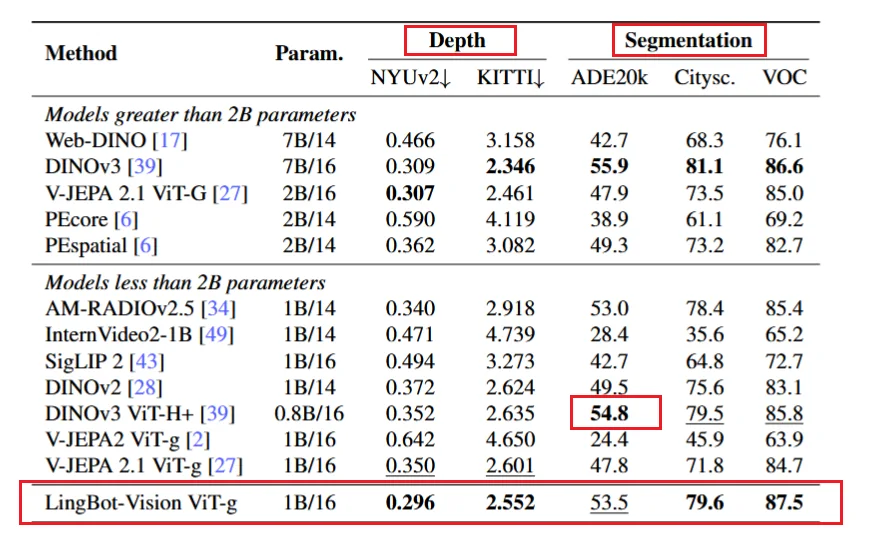
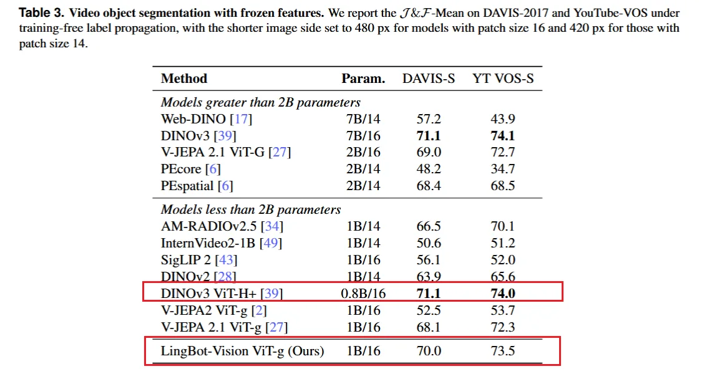
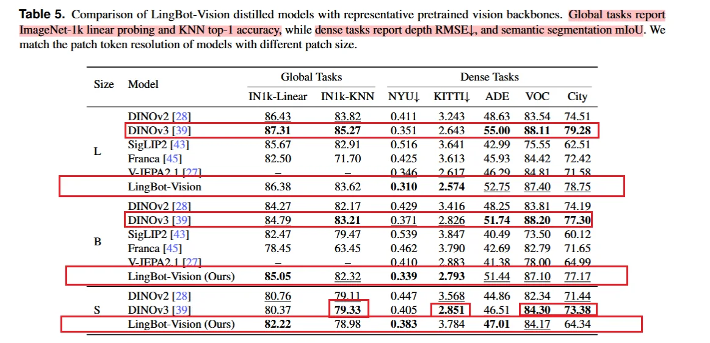
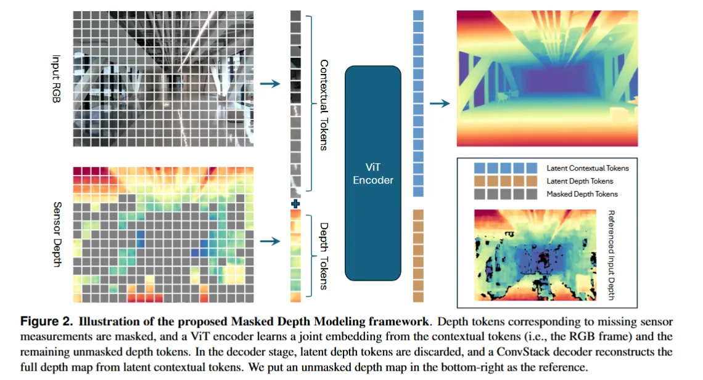
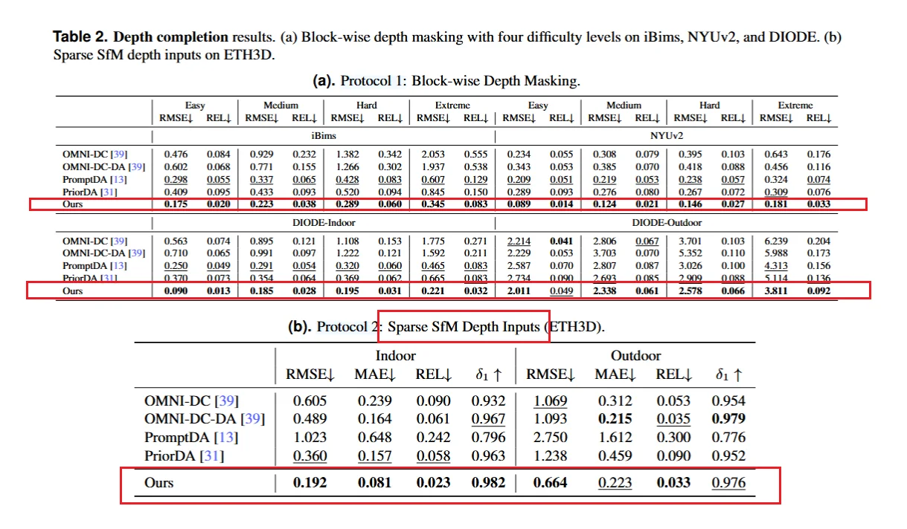
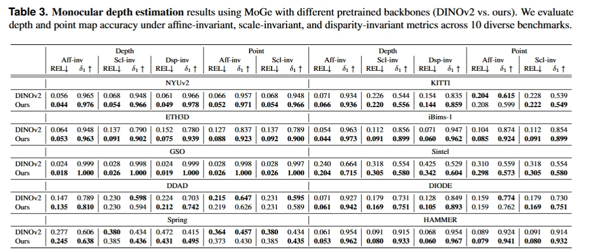

LingBot_Vision_Depth_and_Video
- LingBot-Vision：Vision Pretraining for Dense Spatial Perception, arXiv:2607.05247, RobbyAnt Team, Project Lead: Nan Xue.
- LingBot-Depth：Masked Depth Modeling for Spatial Perception, arXiv:2601.17895, RobbyAnt Team, Project Lead: Nan Xue.
- LingBot-Video：Scaling Mixture-of-Experts Video Pretraining for Embodied Intelligence, arXiv:2607.07675, RobbyAnt Team；
论文一：LingBot-Vision
想重新定义 vision foundation model 的预训练目标；价值在于给 Depth、Map、VLA 提供边界敏感、几何一致的 frozen visual tokens。让机器人视觉特征更适应物理世界。
面向机器人和 3D 视觉的 dense spatial foundation representation，不是通用图像分类 foundation model 的 sota。
DINO 系列的方法是通过师生自蒸馏学习语义一致性以及 patch-level token 表征；考虑语义不变性，以牺牲精细空间理解为代价。
LingBot Vision 认为物理智能(Dense spatial perception)和机器人更需要边界/轮廓和深度不连续等区域的空间结构信号。 >推动从LingBot-Depth到LingBot-Depth 2.0的演进，实现了更优的深度补全，显著提升深度估计性能。
核心方法： Masked Boundary Modeling
MASK 是什么？
mask 是把输入图像切成若干 patch 后，暂时隐藏其中一部分 patch token，不让 Student 网络看到，再要求它根据剩余上下文恢复被隐藏区域的表示。不是把物体从图片里永久删除，而是一种自监督训练手段。
MAE、iBOT 等方法通常用随机 mask，因为没有人工标注也不知道图像中哪里最重要，随机遮挡最简单、无偏且容易扩展到海量数据，同时迫使模型不能只复制局部纹理，而要学习物体整体结构、语义和上下文关系。
随机 mask 有明显缺点：大量被遮 patch 只是墙面、天空、桌面内部等低信息区域，恢复比较容易，但对于空间智能&机器人关心的边缘/深度不连续区域并不一定能很好学习。
LingBot-Vision 在随机 mask 基础上引入 boundary-forcing mask：优先把包含物体边界的 patch 遮住，强迫模型重建最难、最具空间信息的区域； - 随机 mask 用于保证全图覆盖和避免模型只学习边缘； - 边界 mask 把训练重点从“理解图像大概是什么”推到“精确理解物体在哪里结束、另一个物体从哪里开始”。
方法路线
1. Imgs -> ViT -> patch tokens
2. Teacher 从图像中在线预测 boundary field
3. boundary field 解码并 rasterize 成边界图
4. 与边界相交的 patch 被定义为 boundary-bearing tokens
5. Student 的 mask 集合不完全随机，强制包含这些 boundary tokens
6. masked tokens 双重监督：
- 普通 masked tokens：走 iBOT 式 semantic self-distillation
- boundary tokens：除 semantic target，还要预测 categorical boundary field
7. Teacher 通过 EMA 从 student 更新，使边界发现能力和语义表示同步演进。Teacher 本身不通过反向传播直接训练，而是用 Student 参数的指数移动平均， 即 Teacher ← m·Teacher + (1−m)·Student Student 每一步学习后，Teacher 缓慢跟随更新，相当于一个更平滑、噪声更小的历史模型，为 Student 持续提供稳定的伪标签； 随 Student 语义与边界能力提高，Teacher 生成的边界目标也逐渐变准，再反过来监督 Student，发现边界—学习边界—产生更好边界目标。
boundary-forcing mask
teacher 预测图像边界 – 边界 rasterize 到 patch grid – 所有包括边界的 patch 强制加到 student 的 mask set 中 – 其他位置按照随机 mask 补齐
这样 student 就必须学习恢复关键的结构区域。边界是图像中最不冗余的区域： 内部能由邻域推断，但是边界不行，而且边界还决定物体的拓扑与几何不连续。
监督对边界和非边界 token 进行两种不同监督。边界的同时进行语义和边界学习，非边界的进行语义学习。这样全局的信息和局部的结构都可以很好学到。
边界由 teacher 在线预测。用轻量的角点检测提供初期 anchor ，然后 teacher 预测 dense boundary field 并解码这个 field 得到边缘与线段，通过投票去掉不好的候选，保留下来的再渲染成 student 的 field 进行学习。
模型与训练
LingBot-Vision 的主模型： - ViT-g/16 - 约 1.1B 参数 - 使用 161M curated images - 原始候选图像池约 2B web images - 训练方式：self-supervised pretraining - 后续蒸馏： - ViT-L，约 300M 参数 - ViT-B，约 86M 参数 - ViT-S，约 21M 参数
实验
在 dense spatial perception 方向 （Dense depth probing, Semantic segmentation）达到 SOTA or 准 SOTA；在纯 image-level global recognition （Video object segmentation with frozen features， ImageNet global probing） 上不全面 SOTA。



Limitations
- 即使有 ViT-L/B/S 蒸馏版本，是否能在 Jetson Orin、Qualcomm RB 系列、国产边缘 AI 芯片上稳定实时运行，还要验证；
- LingBot-Vision 主要改进的是 token 的空间结构敏感性，不直接输出完整 3D scene state。必须与 LingBot-Depth、LingBot-Map、SLAM、IMU、力控、规划模块协同；
- 边界 token 很强，但如果边界目标本身受图像梯度或 corner seed 偏置影响，模型可能强化某些“看起来像边界但不是物理边界”的结构；
论文二：LingBot-Depth
给定 RGB 图像和不完整、有噪声的 raw depth map，恢复稠密、像素对齐、metric-accurate 的深度图。利用传感器已有有效深度提供 metric scale anchor，进而补齐真实物理尺度下的 dense geometry。
Depth 2.0 证明，边界导向视觉预训练与 depth completion 高度匹配。
核心方法： Masked Depth Modeling
RGB-D 相机中缺失的深度是天然 mask；这些 mask 往往集中在最难、最有价值的几何区域，如透明、反光、弱纹理和深度不连续处。
方法路线

1. 输入 RGB 图像与 raw depth map
2. RGB 和 depth 通过不同 patch embedding 映射到 token grid
3. token 加入共享空间位置编码与 modality embedding
4. depth token 根据 sensor validity 进行 mask：
- 完全无效 patch：必定 mask。
- 部分有效 patch：高概率 mask。
- 完全有效 patch：随机加入 mask，使总 mask ratio 达到 60%–90%
5. ViT encoder 处理完整 RGB tokens 与未 mask 的 depth tokens
6. Decoder 根据融合后的上下文重建完整 depth
7. 使用 valid ground-truth pixels 上的 L1 loss 训练
8. 推理时 refined dense depth 与对应 3D point cloud把 depth completion、depth refinement 与极端情况下的 monocular depth 统一到同一框架： - 当部分 depth token 有效：RGB-D depth completion - 当全部 depth token 被 mask：monocular metric depth estimation - 当 depth 有噪声但不缺失：depth refinement
如何知道传感器的深度是否有效？
有效深度像素直接来自原始深度传感器输出及其有效性规则：RGB-D 相机会把测量失败的位置编码为 0、NaN、无穷值或超出传感器量程的数值，甚至会同时输出 confidence / validity map；
预处理先根据这些标生成二值 valid mask，统计每个 patch 中 valid mask 为 1 的像素比例来区分完全无效、部分有效和基本有效的 depth patch。
如何给 Mask 分类的？
分类依据是深度传感器在该 patch 中提供了多少可信测量；模型只接收未 mask 的 depth tokens，并结合完整 RGB 去恢复被遮掉的位置。 - 一个 patch 里几乎没有有效深度（透明、反光或超量程区域），就记为完全无效 patch，必定 mask；教模型处理真实传感器失效 - 只有一部分像素有效，就记为部分有效 patch，以较高概率 mask；提升对不规则空洞和噪声的鲁棒性 - 大部分或全部像素有效，就记为有效 patch，保留 - 训练时还会随机 mask 一部分。迫使真正学习 RGB 与 metric depth 间的跨模态对应关系，避免只复制输入的传感器深度。
LingBot-Depth 的核心：
把完整 RGB 提供的纹理、边界与语义信息，和原始深度图中仍然有效、未被 mask 的 metric depth 信息一起送入 Transformer encoder 做跨模态融合，再由 decoder 恢复一张更完整、更平滑且保持真实尺度的深度图。 - RGB 判断物体轮廓、表面延展和缺失区域可能是什么结构 - 有效 depth tokens 提供可靠的距离与尺度锚点 - decoder 根据融合特征补全被 mask 或传感器缺失的区域，同时修正部分噪声深度。 - 训练时额外随机 mask 一部分有效深度，防止模型只复制输入深度，迫使它真正学会利用 RGB 和周围几何关系进行推断。**
数据构建
合成数据流
模拟真实 active RGB-D 相机成像： - 自建 3D assets 和室内场景； - 在 Blender 中渲染 RGB、perfect depth、stereo image pairs； - stereo pair 加入 speckle pattern； - 通过 Semi-Global Matching, SGM 生成 sensor-like depth； - 得到带有真实相机风格噪声和孔洞的 depth observation。
比纯 synthetic perfect depth 更接近真实部署，因为模型能看到 depth sensor 的 failure artifacts。
真实数据流
真实采集使用多相机 RGB-D capture rig，覆盖： - Intel RealSense； - Orbbec Gemini； - ZED； - active stereo； - passive stereo； - ToF / structured light 相关设备。
通过 stereo pair 与 FoundationStereo 生成 pseudo-depth supervision，并使用 left-right consistency 过滤不可靠区域。
数据规模
- self-curated data 约 3M RGB-D pairs；
- 约 1M synthetic；
- 约 2M real captures；
- MDM 预训练使用约 10M training samples；
- LingBot-Depth 2.0 中，训练数据进一步扩展到 150M RGB-D samples。
Depth 1.0 与 Depth 2.0 的网络结构
1.0
- Encoder：ViT-L (DINOv2)
- 输入：RGB tokens + unmasked depth tokens
- Decoder：hierarchical ConvStack head，MoGe 风格
- 输出：
- dense refined depth；
- 3D point cloud；
2.0
- Encoder initialization 从 DINOv2 替换为 LingBot-Vision
- 数据从 3M / 10M 级扩展到 150M 级
- MDM 主体 pipeline 基本保持不变。


Limitations
- 透明与反光补全仍可能是“合理猜测”，不是物理测量；
- 依赖 pseudo ground truth，监督质量受 stereo / FoundationStereo 限制。数据规模大不等于监督绝对真实。
论文三：LingBot-Video
低激活计算的大容量视频模型 + 分阶段高分辨率生成。
LingBot-Video 是面向具身智能的通用视频预训练基座：核心任务仍是 T2I、T2V、TI2V，通过 MoE、大规模机器人/第一人称视频和物理奖励，让模型学会“物体与动作通常怎样随时间变化”；基础版不要求持续接收实时动作，只有经过 Action-to-Video 后训练后，才会根据机器人 action chunk 预测未来视觉轨迹，更适合合成训练数据、离线预测动作结果和辅助策略评估。学的是“通用物理视频先验”，回答“接下来可能发生什么”。
LingBot-World 2.0 从一开始就是交互式世界模拟器：输入初始画面后，持续接收相机位姿和分段文本动作，严格按时间因果关系逐段自回归生成未来世界，并针对无限时长、防漂移、实时响应和 Agent 控制做了专门设计，目标是达到 720p、60 FPS 的可探索虚拟环境。把视频生成器改造成持续运行的交互环境，回答“在用户连续操作下，世界下一刻应该怎样响应”。
组成模块：
- Wan2.1-VAE：将图像或视频压缩到视觉 latent。
- Qwen3-VL-4B condition encoder：编码文本或图文多模态条件。
- Task-unified Single-Stream Diffusion Transformer：统一处理 condition tokens 与 visual latent tokens。
- Sparse MoE FFN：在 Transformer block 内用共享专家和路由专家替代 dense FFN。
- 480p base generator：负责全局场景布局、主体和主要运动。
- 1080p cascaded refiner：恢复高频纹理、面部、OCR 和局部细节。
- Data Profiling Engine + World-Knowledge Topological Graph：完成数据过滤、诊断和重采样。
- Dense Structured Captioning + Caption Rewriter：统一训练条件和用户输入。
- Progressive Pre-training：从图像先验逐步过渡到视频、多任务和高分辨率。
- Multi-reward post-training：通过 GRPO 和 real-video preference 优化物理与任务表现。
- LingBot-Video-A2V：把机器人 action 注入视频模型，生成 action-conditioned future rollout。
主干是统一的 Single-Stream Diffusion Transformer。 输入视频或图像先经 VAE 压缩为时空 latent tokens，文本或图像条件由多模态编码器转换为 condition tokens，两类 token 拼接进同一条序列，在同一组 Transformer blocks 中联合建模；通过 3D RoPE 区分时间、高度和宽度位置，通过 QK-Norm、RMSNorm 和 adaLN-single 保证长序列扩散训练稳定。统一支持 Text-to-Image、Text-to-Video 和 Image-to-Video，本质上是在 latent 空间中学习从噪声到目标视频的生成轨迹。
核心扩展是 Sparse Mixture-of-Experts，MoE：每个 Transformer block 的 FFN 不再是单个 dense MLP，而由始终启用的 shared experts 和按 token 动态选择的 routed experts组成。 - 模型总容量约 30B，但每个 token 只激活约 3B 参数； - 共享专家学习通用空间结构和物理规律， - 路由专家分别处理运动、材质、机器人动作、相机变化和不同生成任务。 - 先用 480p 的 base generator 生成场景布局和主要运动，再由级联 refiner 提升到 1080p、恢复纹理和局部细节
与普通视频生成模型最大的区别在于数据和后训练目标。 - LingBot-Video 引入大量机器人操作、四足、人形、导航和 egocentric 视频； - 建立语义树、动作树和数据分析系统，主动加强抓取、接触、多物体操作等稀缺样本。 - 后训练也不只奖励画面清晰和文本匹配，还评价动作是否按顺序发生、运动是否连贯、人体和机器人结构是否合理、物体是否保持存在、是否出现穿透，以及最终任务是否完成。 - 它试图把优化目标从“生成一段看起来不错的视频”，推进到“生成一段动作结果和物理变化较可信的视频”。
整体路线
LingBot-Vision 看清结构 LingBot-Depth 测准几何 LingBot-Video 想象演化 共同构成具身智能前端， 距离统一、可校准、可闭环控制的 4D world model 仍有明显研究空间。
完整 RobbyAnt 物理感知—想象系统：
- LingBot-Vision
- 提供 boundary-aware semantic-spatial tokens；
- 识别对象、轮廓和结构变化。
- LingBot-Depth
- 将 RGB 与 raw depth 对齐；
- 提供 metric scale、surface geometry 和 point cloud。
- LingBot-Map
- 在视频流中估计 pose；
- 将单帧几何维护为长期 3D state。
- LingBot-Video
- 在当前状态上预测未来视觉变化；
- 生成长尾数据；
- 评估候选动作的后果。
- LingBot-VA / LingBot-VLA
- 根据指令和状态产生 action；
- 利用 Video / World rollout 进行训练或规划。